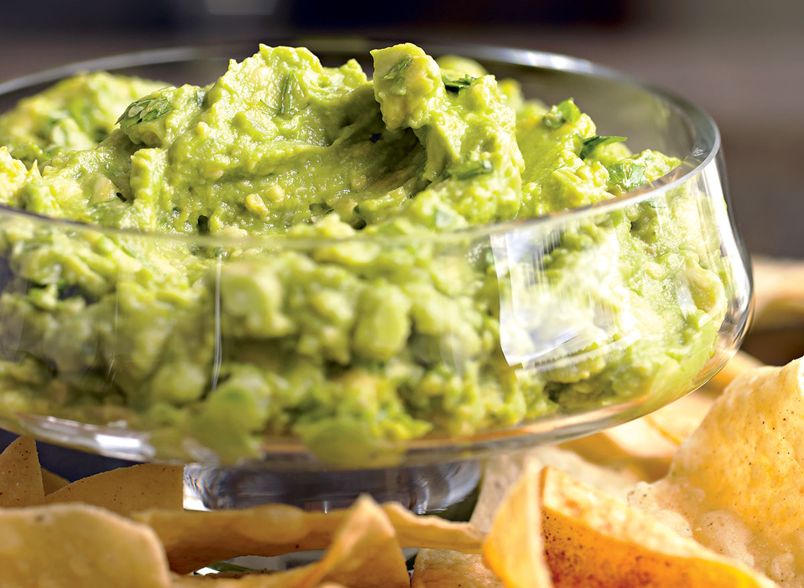

Guacamole

Source: Mitch Mandel and Thomas MacDonald
Guacamole is a classic Mexican dip made from ripe avocados mashed with various ingredients such as lime juice, cilantro, onions, tomatoes, and jalapeño peppers. The resulting mixture is a smooth and creamy dip with a mild, slightly sweet flavor that is perfect for dipping tortilla chips or as a condiment for tacos, burritos, and other Mexican dishes. The creamy texture of the avocados combined with the tangy lime juice and the spicy jalapeño peppers creates a deliciously balanced flavor that is both fresh and satisfying. Guacamole is a healthy and versatile snack that is easy to make and is enjoyed by people all over the world.
Ingredients:
- 2 ripe avocados
- 1/2 red onion, finely chopped
- 1/2 tomato, diced
- 1 lime, juiced
- 1/4 teaspoon salt
- 1/4 teaspoon black pepper
- 1 tablespoon chopped fresh cilantro (optional)
Instructions:
- Cut the avocados in half, remove the pit, and scoop out the flesh into a mixing bowl.
- Mash the avocado with a fork or a potato masher until it is mostly smooth, with a few chunks remaining.
- Add the chopped onion, diced tomato, lime juice, salt, and black pepper to the bowl, and mix well to combine.
- If desired, add chopped cilantro to the guacamole and mix again.
- Taste and adjust the seasoning as needed, adding more salt or lime juice to taste.
- Serve the guacamole immediately with tortilla chips, on tacos or burritos, or as a topping for grilled meats or
vegetables.
Enjoy your homemade guacamole!
See other recipes:
This guide was based on the content from 'https://www.eatthis.com/easiest-recipes/'.
Home